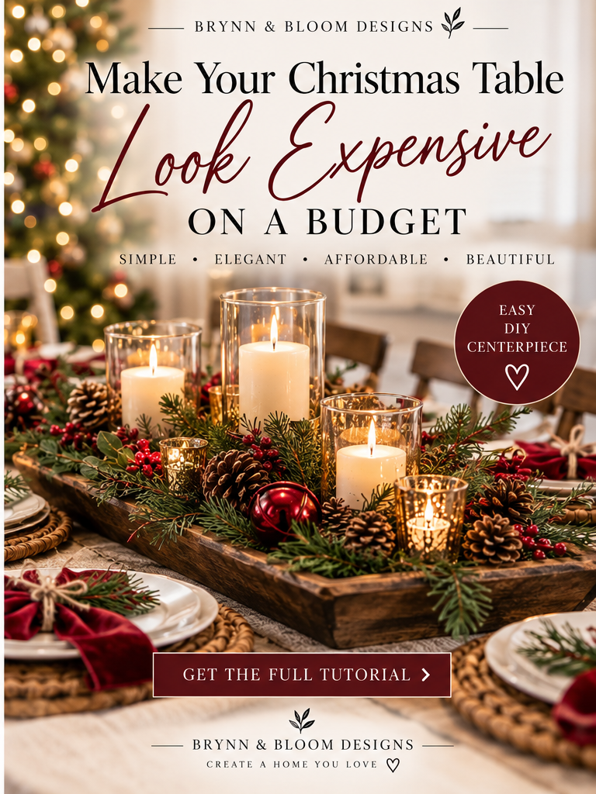

SEASONAL MAGIC / THE EASY DIY EDIT
A Florist-Style Christmas Centerpiece from an Everyday Bowl
Create a low, lush holiday centerpiece in a shallow antique-brass-look bowl with cedar and pine greenery, burgundy velvet ribbon, red berries, pinecones and warm flameless candles.


ANOTHER WAY TO STYLE IT
Make the wooden-tray centerpiece in Pin #10
For the rustic version pictured above, replace the brass-look bowl with a wide, shallow wooden tray. Set three ivory flameless LED pillar candles of different heights along its center, then arrange faux cedar and pine stems around them. Tuck small pinecones and red berry picks between the greenery; add battery-operated LED votives in glass holders for extra glow. Finish with a few burgundy accents, such as a ribbon tucked at one end or an ornament you already own. Keep all candle switches accessible and make sure the arrangement is stable before placing it on the table.
The wooden tray, glass LED votives and optional burgundy ornaments are alternatives or extras—not required for the brass-bowl version. Never use real flame near faux greenery, ribbon or the wooden tray.
Shop the centerpiece supplies ↓
THE LITTLE TRANSFORMATION
Make the look in five steps
- Choose a shallow vessel. Use a wide, stable antique-brass-look bowl or tray. A bowl you already own works beautifully; the arrangement should sit low enough for guests to see across the table.
- Position flameless candles. Set three battery-operated ivory pillar candles of staggered heights in the center, with the tallest toward the back. Check their switches and battery access before adding greenery.
- Build the greenery base. Arrange faux cedar and pine stems around the candles, letting a few drape over the bowl edge. Use floral wire to hold loose stems together without blocking candle switches.
- Add holiday details. Tuck faux red berry picks and small pinecones between the stems, leaving space around each candle. Keep the arrangement balanced rather than symmetrical.
- Finish with velvet. Tie a small burgundy velvet wired-ribbon bow and nestle it toward the front or side of the bowl. Fluff the greenery and check that the arrangement is stable.
Use flameless LED candles only; do not place real flames in faux greenery. This is a design concept, and your finished arrangement will vary with the materials you choose.